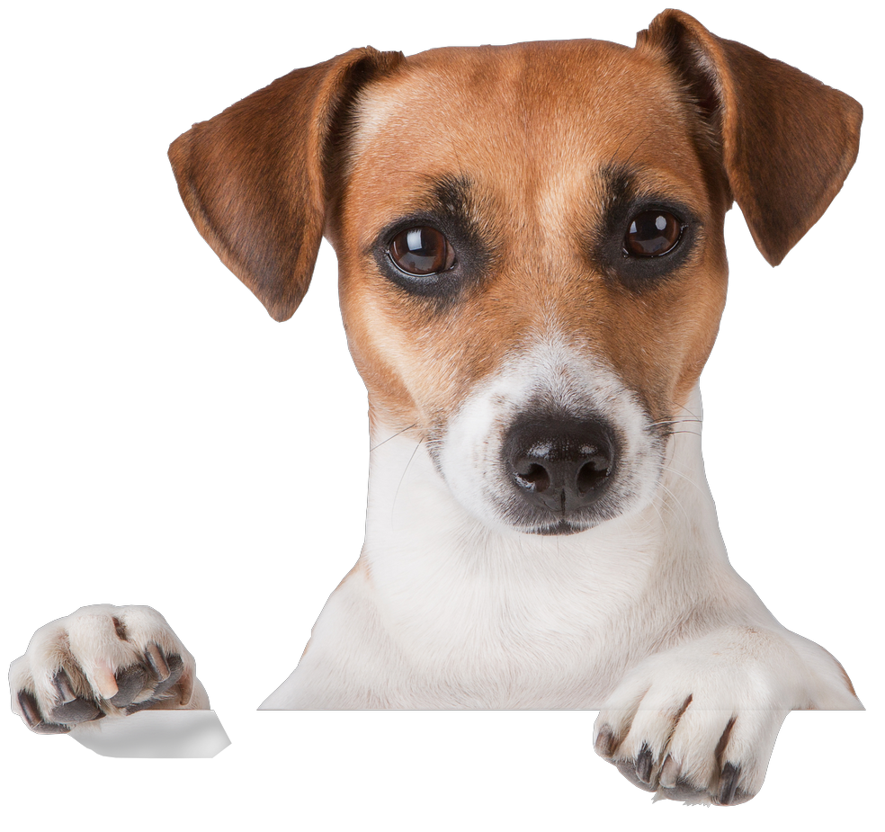
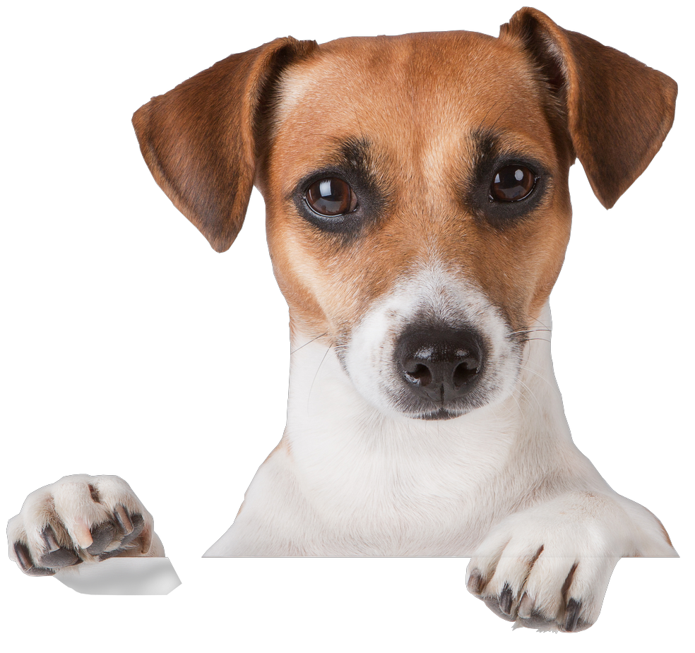

Hablemos sobre ellos
Características
- El perro se define como un mamífero cuadrúpedo que camina en cuatro extremidades, tiene rabo y un manto que rodea todo el cuerpo.
- El perro pertenece a la especie de los cánidos. Su tamaño, forma y pelaje varían en función de la raza de perro.
- Los perros son animales inteligentes y pueden ser entrenados para aprender una amplia variedad de comandos y tareas. Son capaces de comprender instrucciones, responder a señales y adaptarse a diferentes situaciones.
- Los perros son conocidos por su lealtad hacia sus dueños. Son animales muy fieles y están dispuestos a hacer cualquier cosa para proteger y complacer a sus dueños.
- Los perros tienen una capacidad notable para adaptarse a diferentes entornos y situaciones. Pueden vivir en espacios pequeños o grandes, en áreas urbanas o rurales, y se adaptan a diferentes estilos de vida.
- Los perros tienen un sentido del olfato excepcionalmente desarrollado. Pueden detectar olores sutiles y se utilizan en diversas tareas, como búsqueda y rescate, detección de drogas o explosivos, y rastreo.
Alimentación
Los perros son animales herbívoros, es decir que son capaces de comer desde plantas, hierbas hasta frutas y vegetales. Por un lado, los carbohidratos que provienen de las plantas les van a ayudar a tener una buena fuente de energía y sobre todo a mejorar el funcionamiento de su sistema digestivo. Si miramos sus dientes, los molares o muelas son bastante eficientes, los cuales se utilizaban en un pasado para triturar la comida vegetal. Tienen 32 dientes diseñados para masticar diferentes tipos de alimentos. Entre los cuatro y nueve meses de vida suelen cambiar su dentadura por los dientes definitivos. Además, sus glándulas salivales segregan la cantidad adecuada de saliva para facilitar la digestión en la boca. Debido a la interacción con los humanos, también suelen comer proteínas animales, como carne o pescado cocidos, y alimentos equilibrados que contienen todos los nutrientes necesarios para mantener su óptima salud. Dependiendo de su edad y estilo de vida, necesitan consumir entre 1300 y 3500 calorías por día.
Relación humano-perro
La conexión entre los humanos y los perros ha sido revolucionaria para muchas personas. Ya que las mascotas han despertado la compasión hacia los animales en nuevas generaciones que están impulsando hacia un futuro más equitativo para otros seres vivos. El lazo que se forma con los perros está lleno de virtudes y emociones favorables.
- Los perros son conocidos como "el mejor amigo del hombre" debido a su capacidad para brindar compañía constante. Son leales, cariñosos y están siempre dispuestos a estar cerca de sus dueños, brindando consuelo y apoyo emocional.
- Está comprobado que tener un perro puede tener numerosos beneficios para la salud humana. Los perros ayudan a reducir el estrés, disminuir la presión arterial, mejorar el estado de ánimo y fomentar un estilo de vida activo a través del ejercicio diario.
- La relación entre un humano y un perro puede ser profundamente emocional. Se establece un vínculo afectivo basado en la confianza, el amor y el cuidado mutuo. Los perros son capaces de comprender y responder a las emociones humanas, brindando consuelo y alegría en momentos difíciles.
- Los perros y los humanos pueden disfrutar de actividades compartidas, como paseos, juegos, entrenamiento y exploración al aire libre. Estas actividades fortalecen el vínculo y promueven la interacción y el tiempo de calidad juntos.
- Tener un perro implica una responsabilidad significativa. Los humanos deben proporcionar cuidado adecuado, como alimentación, ejercicio, atención veterinaria y socialización, así como dedicar tiempo y recursos para satisfacer las necesidades del perro.
- Los perros pueden actuar como guardianes y proporcionar una sensación de seguridad a sus dueños. Su agudeza sensorial y su instinto protector hacen que muchas personas se sientan más seguras en presencia de un perro.
Razas
Razas de perros grandes
- Rottweiler
- American bully
- Doberman
- Golden retriever
- Dogo Burdeos
- Fila brasileño
- Alaskan malamute
- American pit bull terrier
- Boyero de Berna
- Dogo Aleman
Razas de perros medianos
- Bulldog ingles
- Cocker spaniel ingles
- Bulldog Frances
- Beagle
- Basset hound
- Chow chow
- Boxer
- Labrador retriever
- Pastor ganadero australiano
- Bull terrier
Razas de perros pequeños
- Pomerania
- Chihuaha
- Dachshund
- Caniche
- Yorkshire
- Corgi
- Carlino
- Schnauzer
- Galgo italiano
- Jack Russel Terrier
Razas de perros populares
- Husky siberiano
- Golden retriever
- Caniche
- Yorkshire terrier
- Dálmata
- Chihuahua
- Bulldog inglés
- Dachshund
 
